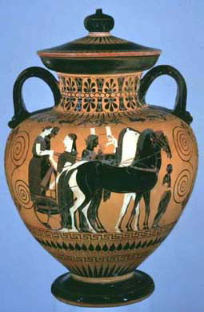

|  |
|
Exekias,
Black-Figured Neck Amphora with Lid: On Each Side Wedding
Procession in a Chariot. Attic, ca. 540 B.C. Terracotta;
height 18 1/2 in., Rogers Fund, 1917, 17.230.14ab and Gift
of J.D. Beazley, 1927, 27.16.
Photo: Courtesy of the Metropolitan Museum of Art. |